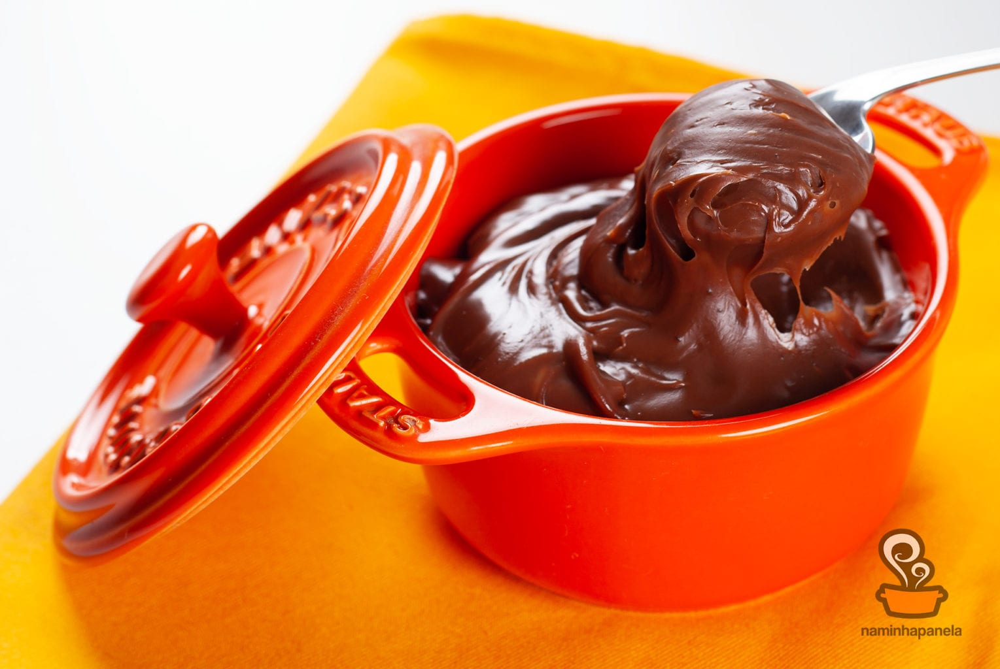

Brigadeiro de colher
Receita de brigadeiro de colher fácil e sem erro, para você matar a vontade de um docinho!
Ingredientes
- 1 lata de leite condensado
- 3 colheres (sopa) de achocolatado em pó
- 1 colher (sopa) de manteiga
- 2 latas de creme de leite sem soro
- Chocolate granulado para decorar
Modo de Preparo
- Leve os 3 primeiros ingredientes ao fogo médio, mexendo sempre, até engrossar.
- Fora do fogo, incorpore o creme de leite.
- Distribua em potinhos ou tacinhas e sirva decorados com granulado.